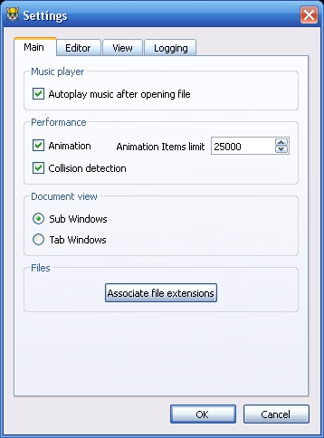
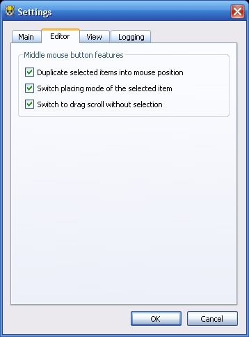
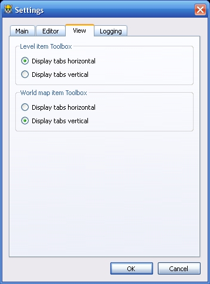
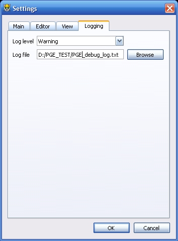

Here you can set configure application.
Autoplay music - Music will always start playing on file load
Animation - On the map will play animations of items.
Animation items limit - This limit disable animation when on the map will be too many items.
Collision detection - This feature enable checking of collisions when you move items.
Document view - You can define view of opened documents: as subwindows or as tabs.
Associate file extensions - This feature allow to open files from your file manager directly.

Here you can enable or disable editing process features.
Duplicate selected items into mouse position - this means: when you press middle mouse button, all selected items will be duplicated into current mouse position relative to left-top corner.
Switch placing mode of selected item - this means: you can switch placing mode if you select one of items. This feature nearly to SMBX's selection tool which always switch placing mode of selected item.
Switch to drag scroll - if your map haven't selected items, you will switch into drag scroll mode.
Don't show properties box on taking item to place - Properties box will not be shown when you take items from item boxes. To open properties dialog use the "Properties" button on the toolbar.

Here you can set up some view settings. For example, tab direction of the toolboxes.
Also here you can change icon theme if it was installed into themes/ directory

Here you can set log file, where editor will write its work process logs.
Log level - is a filter which allow write or anything, or only warnings or errors. Also you can disable logging.

Copyright © 2014-2015 Platformer Game Engine by Wohlstand project. All rights reserved.